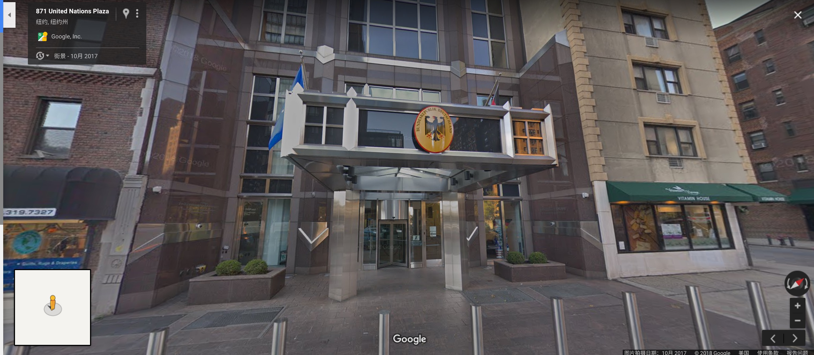
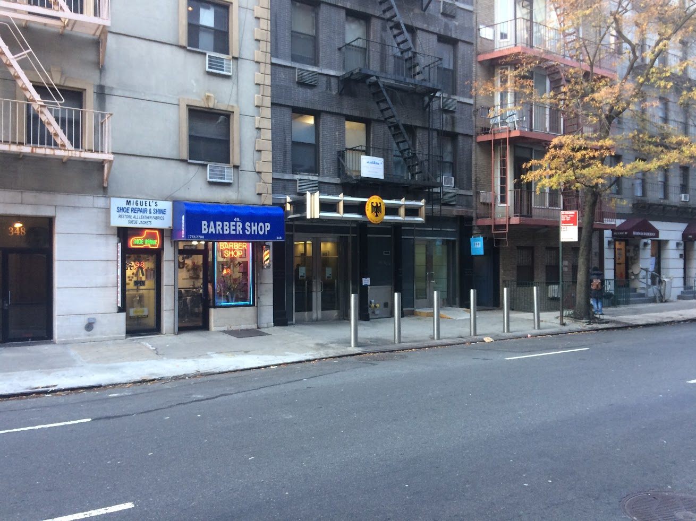
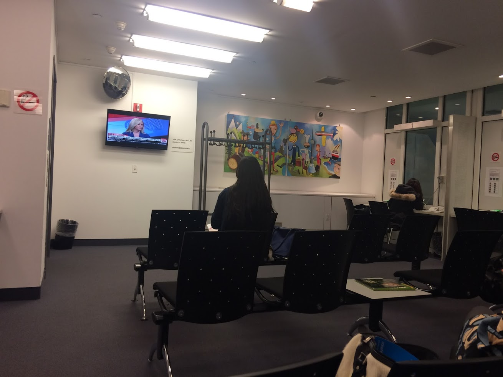

美国F1身份申请德国签证攻略
先介绍下背景，刚来美国3个月，英语不溜只会点菜那种，无驾照，无SSN，无工作，F1签证。
一般有美国签证申请德国签证是不会被拒签的，除非你的材料有大问题，所以认真准备都是可以过的
去欧洲玩是个很仓促的决定，所以我是提前一个月才开始申请的，请不要学我，一般要提前三个月。
如果可以，不要申请德国签证！！
如果可以，不要申请德国签证！！
如果可以，不要申请德国签证！！
建议，如果可以，去申请法国的签证，德国的实在是太坑爹了！！
如果申请人将要前往一个申根国（仅一个），申请人必须在特定国家的相应大使馆或领事馆申请。如果申请人计划前往两个或更多申根国，强烈建议申请者在将要停留时间最久的国家（即“主要目的地”）的大使馆或领事馆申请签证。如果没有主要目的地，只是随机访问几个申根国家，那么申请人必须在其行程中首个抵达的国家的大使馆或领事馆申请签证。当确定在哪个大使馆或领事馆申请签证之后，申请人将要在对自己居住地拥有管辖权的国家的大使馆/领事馆申请签证。
我这次行程在德国呆的最久，所以预约的德国的。其实是时间太急只能预约德国的申根签了，法国签证排到了明年，西班牙的据说效率低不想去，所以强行多安排了几天德国行程……
预约
首先上这个网站预约（这是纽约领事馆，不同地方的领事馆不一样，可以自己看下）。
预约很简单，填下自己的基本信息选个时间就好。
然后就是要填写VIDEX表，专门有个网页是用来填这个表的，一次写不完可以第二次写。只是他不能在线保存，都是存为XML格式的放在本地。VIDEX网页链接
材料
- 预约的 email 确认信；
- 签证表（VIDEX）和 declaration letter. 网上填写然后打印即可；
- 两张申根签证照片。规格必须是45*35mm；
- 护照。注意美国签证在旅行结束之后要有 3 个月有效期；
- 护照和美国签证的复印件，F-1 签证要准备 I-20 和复印件（一定要带）；
- 过去三个月银行账单。最好有 200 刀每天的钱，越多越好；
- 申根特别要求的医保证明。 我先是给她看了我们学校的保险，由于没有具体的赔偿额度没有过，还好我另外买了一个保险，上面明确写了有50K刀的美国境外保险，过了～；
- Reference letter. 找学校开就好（看都没看）；
- 机票酒店预约信，以及复印件；
- Utility bill: 水、电、手机、电视、网络等账单或者驾照等能证明你居住地的材料。
面签
面签过程很纠结，着实感受了一把德国人的严谨：
先是找德国大使馆，本来想着应该很好找，联合国大楼对面，川普家旁边，谷歌地图上长这样：

但是进去之后有个人问我是不是签证，我说是啊。然后他说这里不是签证的地方，你出门左拐在左拐理发店旁边有个门你进去，那个才是签证的地方。
我：……
然后找了半天找到了理发店旁边的门，进去，还是刚才那个人，笑着跟我说：“Hello again！”。我真是一万个白眼，你直接把我带过来会死啊……

预约的是12点但是由于下午学校有个career fair我就11点到了，心想着可以提前结束。然而提前到并不能提前签证，德国人表示还是要按预约的时间来，我就只能坐在那里等。
于是就等到了12点。先把我的所有材料拿了过去看了一遍，问我是不是在德国呆最长时间，我说是啊。
然后她就开始拿张纸，拿支笔，认认真真的对着我的材料，把我在每个国家的每一天都列出来，最后得出的结论就是我的确是在德国呆最长时间。
我本以为可以过了，没想到她直接说了句：“好了，现在来背下你的行程吧…………”。十五天的行程！！！！还好签证前小伙伴提醒了我可能会这么搞我，我提前背了点，勉强过了。

背完之后就开始问我想怎么拿我的签证，邮寄还是自己来拿，我是对美国邮政深恶痛绝，决定自己来拿。
时间
我是7号去的大使馆，
14号拿到的护照，
17号下午的飞机飞伦敦，
时间特别紧张，
估计我是第一个这么干的人，
请不要学我……
然后德国人给了我一个月的签证，无限次往返，每次逗留时间不超过十五天。。
但是！！一起签证的小伙伴，法签，多的拿了一年的无限次往返，少的拿了半年。同样的材料，同样的时间！！
所以
如果可以，不要申请德国签证！！
如果可以，不要申请德国签证！！
如果可以，不要申请德国签证！！